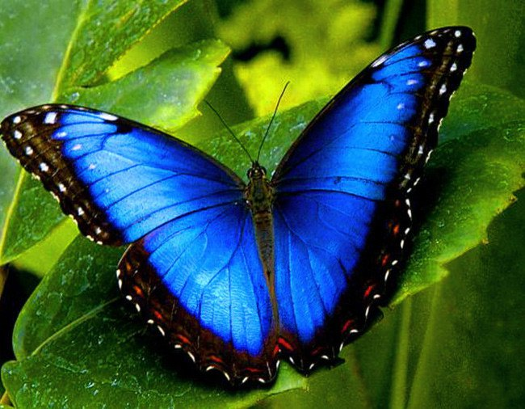
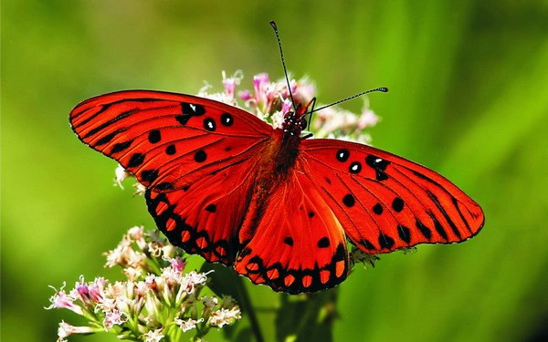
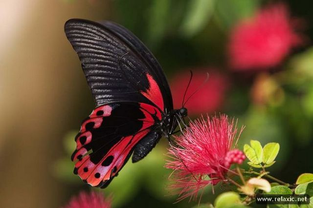

Полёт
 Основной формой передвижения чешуекрылых является полёт, как активный (машущий), так и пассивный (парящий, планирование, пикирование)[25].
Действия крыльев бабочки при активном машущем полёте представляют собой последовательность определённых движений, образующих замкнутый цикл. Каждый цикл состоит из взмаха крыльями, находившимися в крайне верхнем положениях вниз, не ниже корпуса и возвратного взмаха крыльями вверх. При взмахе крыльями вниз бабочка, приобретает некоторый импульс движения вверх, отталкиваясь от воздуха.
Способностью к парящему полёту обладают представители семейств: данаиды, Nymphalidae, Papilionidae, Pieridae, Morphinae, Uraniidae. Мелкие виды из семейства нимфалиды для парения используют термические потоки, образующиеся у самой земли, более крупные виды парят гораздо выше, часто на уровне крон деревьев[25]. Ещё более приспособленными к парению являются представители семейства парусников, особенно парнассиусы, которые могут длительное время парить над горными склонами, корректируя траекторию полёта взмахами крыльев и меняя высоту[11][25].
Питание
 Большинство видов, будучи антофилами, питается цветочным нектаром. Многие чешуекрылые также питаются соком деревьев, гниющими и перезревшими фруктами. Бражник мёртвая голова охотно поедает мёд из гнёзд и ульев пчёл. Первичные зубатые моли питаются пыльцой.
Виды с редуцированными ротовыми органами не питаются и живут исключительно за счёт запасов питательных веществ, накопленных в стадии гусеницы.
Ряду видов из семейств нимфалиды, парусники и других, для жизнедеятельности необходимы микроэлементы, в первую очередь натрий[11]. Они охотно летят на влажную минеральную глину, на экскременты и мочу крупных животных, влажный древесный уголь, человеческий пот — откуда получают влагу и необходимые микроэлементы[41]. Часто самцы данных видов собираются группами на влажном песке и глинистых почвах, по берегам ручьёв, возле луж[11][15][26].
Терморегуляция

Чешуекрылые, как и все насекомые, традиционно рассматриваются как пойкилотермные организмы (температура тела которых зависит от температуры окружающей среды), в отличие от теплокровных организмов (которые поддерживают стабильную внутреннюю температура тела, независимо от внешних воздействий). Однако термин «терморегуляциия» в настоящее время используется для описания способности насекомых поддерживать стабильную температуру (выше или ниже температуры окружающей среды) по меньшей мере в какой-либо части их тела, физиологическими или поведенческими средствами[44].
Многие чешуекрылые являются эктотермами (животные, для которых источником тепла является окружающая среда), другие же могут быть эндотермами (самостоятельно производить тепло внутри своего тела). Эндотермических насекомых корректней описать как гетеротермов, потому что они не являются целиком эндотермичными. Например, активные ночью виды бабочек производят необходимое для своего полёта тепло путём сокращения мышц груди, но их брюшко при этом практически не нагревается[45].
Больше информации можно узнать тут > Читать